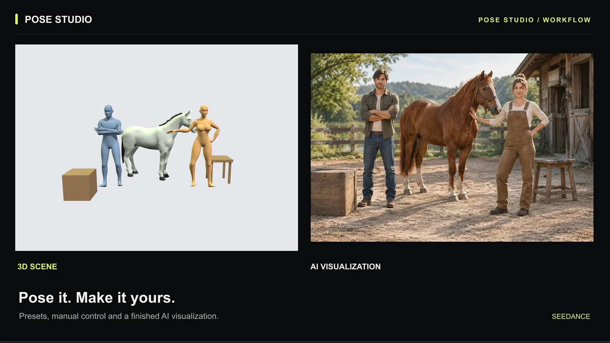

When a character's stance or camera angle matters, a 3D mannequin gives the image model a visual reference. In Seedance, you can arrange that reference in the browser and send a capture directly to GPT Image 2. The generated image may still need revisions: a reference guides the model, but does not lock every joint or preserve a character's identity.
See the AI pose generator and its controls, or open Pose Studio to follow along. Updated .
1. Start with a pose you can read clearly
Choose a preset close to the stance you need. For example, start with Jogging for a running composition. Drag the mannequin's control points to adjust the limbs. Check the shoulders, hips, bent knees, and where the feet meet the floor.
Work with the single mannequin in the current online editor. Keep its silhouette readable: overlapping arms and legs can make the reference harder to interpret.

2. Set the camera before you capture
Orbit the camera until the intended pose is clear. A front view, side view, and three-quarter view produce different reference images even when the mannequin stays in the same pose. Leave room around hands and feet if you want a full-body result.
Use the final framing to decide which details matter. A hidden hand or a foot behind the other leg may need a different camera angle rather than more pose adjustments.
3. Send the pose to GPT Image 2
Select Use this pose. Seedance captures the scene and attaches it as a reference in the GPT Image 2 workspace. Check the reference thumbnail before generating, then write the character, clothing, setting, and visual style you want.
You can explore the pose editor before signing in. Image generation requires sign-in and credits; check the cost shown in the workspace before submitting.
A useful starting prompt is:
Use the attached mannequin image as the pose and camera reference. Create a full-body image of [character] wearing [clothing], in [setting], with [lighting and style]. Follow the visible stance, limb placement, and framing. Render the mannequin as the described character.
This is a prompt example, not a tested output guarantee. It uses the attached image directly; you do not need to type an @image1 token in this workspace.
4. Adapt the prompt to the scene
These examples describe what to try. They are not before-and-after case studies.
Running character
Set up: a jogging pose, visible bent knee, and room ahead of the figure.
Use the attached mannequin image as the pose and camera reference. Create a full-body editorial photograph of an adult runner wearing a red track jacket and black shorts on an outdoor track. Follow the visible running stance and framing, with soft morning light.
Defensive stance
Set up: bent knees, raised arms, and hands that do not overlap the face.
Use the attached mannequin image as the pose and camera reference. Create a full-body concept illustration of an adult martial artist in a dark training outfit. Follow the visible defensive stance and camera angle. Use a simple studio background and clear directional lighting.
Kneeling character
Set up: the Kneeling preset, with the bent leg and hands clearly visible.
Use the attached mannequin image as the pose and camera reference. Create an illustration of an adult explorer wearing a tan jacket and kneeling on a rocky trail. Follow the visible kneeling stance and camera framing, with soft overcast light.
5. Compare the image with the reference
Inspect the result before using it in a larger project. Check limb placement, hands, feet, body proportions, character count, and camera angle. If an important part drifts, change one variable and generate again so you can tell whether the change helped.
- Arms or legs merge: separate them in the pose or rotate the camera to reveal their outlines.
- The image crops a hand or foot: pull the reference camera back and ask for a full-body composition.
- The model adds a different action: remove conflicting action words and describe a single still pose.
- The result still looks like a mannequin: describe the intended character and clothing clearly, and identify the mannequin as a pose reference.
A pose capture describes body layout and framing. It is not an OpenPose skeleton export, an identity reference, or a timed motion sequence.
Can you turn this pose into a video?
The workflow on this site currently ends with an image. The site's video generator does not currently accept this pose capture or the finished image as an input. To continue, download a suitable generated image and use a separate, compatible image-to-video tool that accepts a starting frame.
In that tool, describe a short action and the camera movement. For example: The runner takes two strides forward while the camera tracks alongside at waist height. A starting image can guide the opening composition; it does not specify every pose throughout the clip. Motion transfer from a reference video is a different workflow.
If you already use a separate 3D editor such as Anyposes, its screenshot can also serve as an image reference in a tool that accepts uploads. Check that tool's input and motion controls before following a video tutorial.
Try a pose-led image
Start with one readable pose and a simple scene. Once the still image works, add more complex styling or plan the next video step.
Review the pose-to-image workflow and FAQs, or compare six original pose references and their first image outputs.